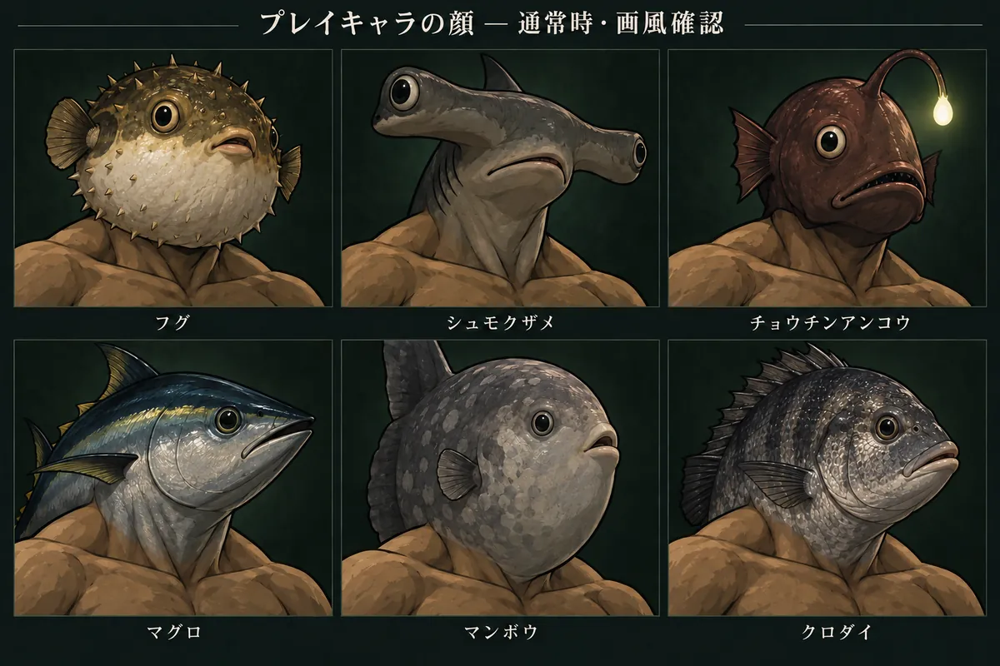
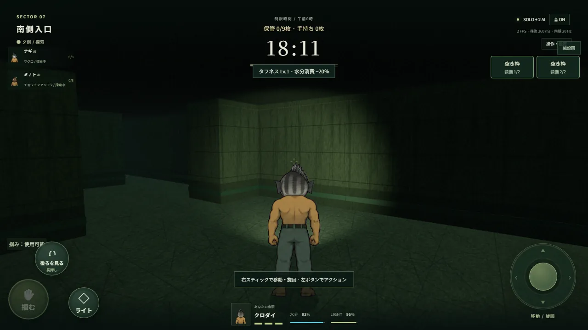
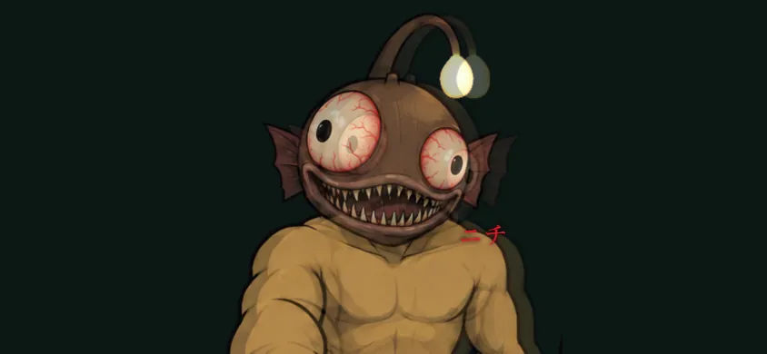

夕刻、閉ざされた水没施設。魚の顔をした仲間たちと手がかりを集めて、脱出路を探す協力ホラーです。ただし仲間の中には、誰かの姿をまねた「ドッペル」が紛れている。

同じ魚が2匹いたら、要注意
フグ、クロダイ、シュモクザメ、チョウチンアンコウ。魚頭は毎回ランダム。ドッペルは仲間の姿だけでなく、ライトや手鏡の動きまでまねてきます。

助けたい。でも、近づくと呪われる
ドッペルに肩を掴まれると呪われ、3回で脱落。仲間はドッペルの肩を掴み返して救えるが、呪われた仲間のそばに居続けると、呪いが自分にもうつる。

その「おーい」は、誰の声？
ライトを点ければ速く動けるが目立つ。消せば気配を抑えられる。どこかから聞こえる呼び声も、仲間のものとは限りません。ヘッドホン推奨。
はじめかた
- 呼び名とズボンの色を決める（ログイン不要）
- 「ひとりで試す」でAIと探索、または「部屋を作成」
- 3桁の招待コードを仲間に送って、ホストが開始
遊ぶ前に
- ジャンル
- リアルタイム協力ホラー
- 人数
- 3〜6人（人間＋AI）。ひとりでもAIと遊べる
- 時間
- 1回20分か30分
- 端末
- スマホ（横持ち）、PC（キーボード・ゲームパッド）
- 登録
- 不要。名前を入れるだけ
- 料金
- 無料